Многие туристы Норвении начинают свое знакомство со столицы – Осло. Именно там и находится одна из самых неоднозначных достопримечательностей всей Скандинавии – парк скульптур Вигеланда - крупнейший и интереснейший парк Норвегии(комплекс, представляющий эпоху Третьего Рейха).
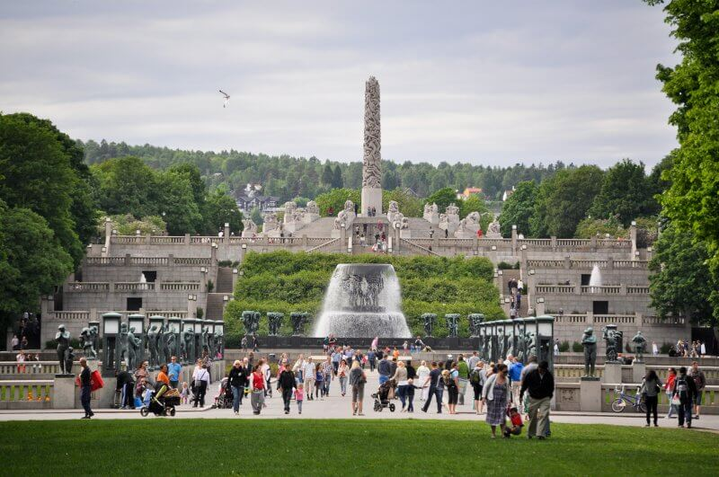
Уникальность этого комплекса под открытым небом в том, что он не является привычным для нас парком, возносящим силы и красоту природы. Парк скульптур Вигеланда в Осло – это музей с сакральным смыслом, объекты, которого отражают сатанинские силы и являются квинтэссенцией грехопадения человека.
Есть и другое видение: некоторые исследователи считают, что экспонаты тесно связаны не с христианской символикой, а со скандинавской мифологией, отображая круговорот жизни и смерти такой, какой ее видели во времена язычества.
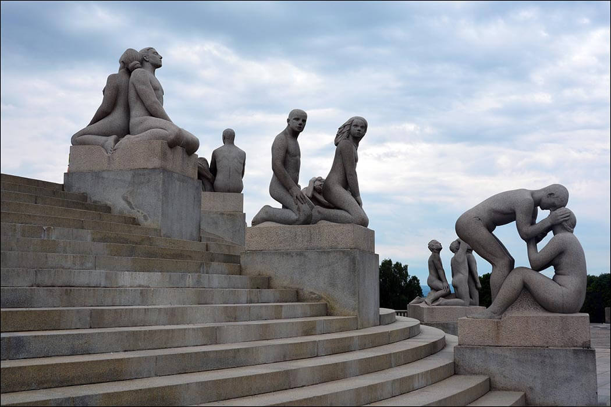
Парк был спроектирован и создан Густавом Вигеландом в период с 1907 по 1942 год. Началась история парка с того, что получил от правительства заказ на изготовление скульптур, изображающих великих личностей Норвегии.
1921 год был переломным в работе мастера. Дом в Осло, в котором он жил и творил, городские власти предназначили под снос. В ходе продолжительного судебного разбирательства власти выделили Густаву другое здание и часть территории Фрогнера, но с условием, что все будущие работы мастера будут принадлежать городу. Так и родился парк Густава Вигеланда.
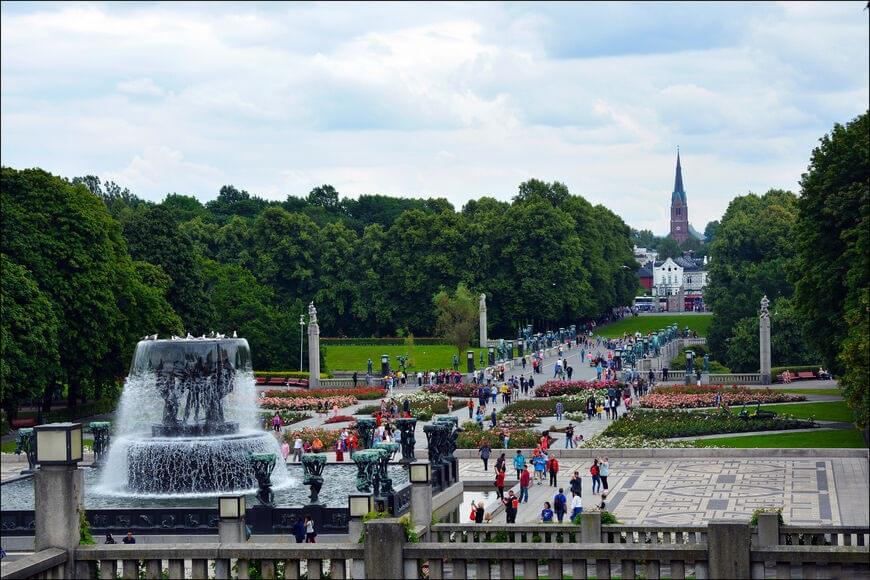
Впервые талант открылся пока его знали еще как Торсена (настоящая фамилия мастера). Отец-стояляр оценил, как ребенок вырезал деревянную безделушку. Папаша, кстати, был религиозный фанатик, алкоголик, и, по воспоминаниям самого скульптора, ему случалось выгнать детей ночью на улицу. И в довершение еще завел малолетнюю любовницу. Последнее, видно, стало последней каплей для матери. И она с детьми переехала к своим родителям на далекий хутор Вигеланд, чье название потом возьмет себе псевдонимом Густав.
Но при всем при этом алкоголик не только заметил дарование сынули, но и помог. Он отправил Густава к лучшему резчику в Осло, и еще дополнительно доплачивал, чтоб ученика не пригружали рутинными хозяйственными поручениями типа “сбегай за водкой”. А потом похлопотал об оформлении отпрыска в Королевское художественное училище. Видать, эта любовь отца, которую всегда ставят на второе место после материнской, запомнится на всю жизнь. Во многих скульптурах Вигеланд изображал отцов с детьми не реже, чем матерей.
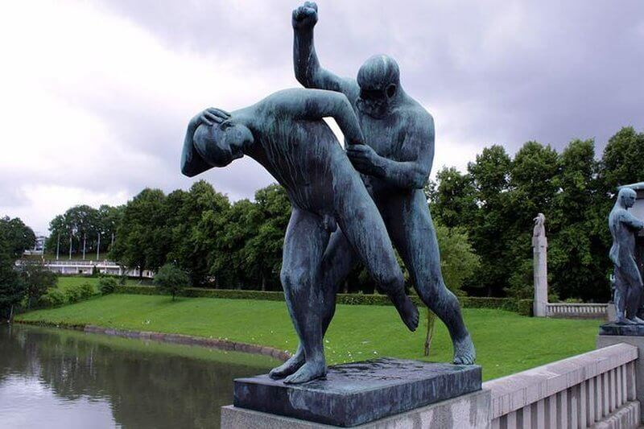
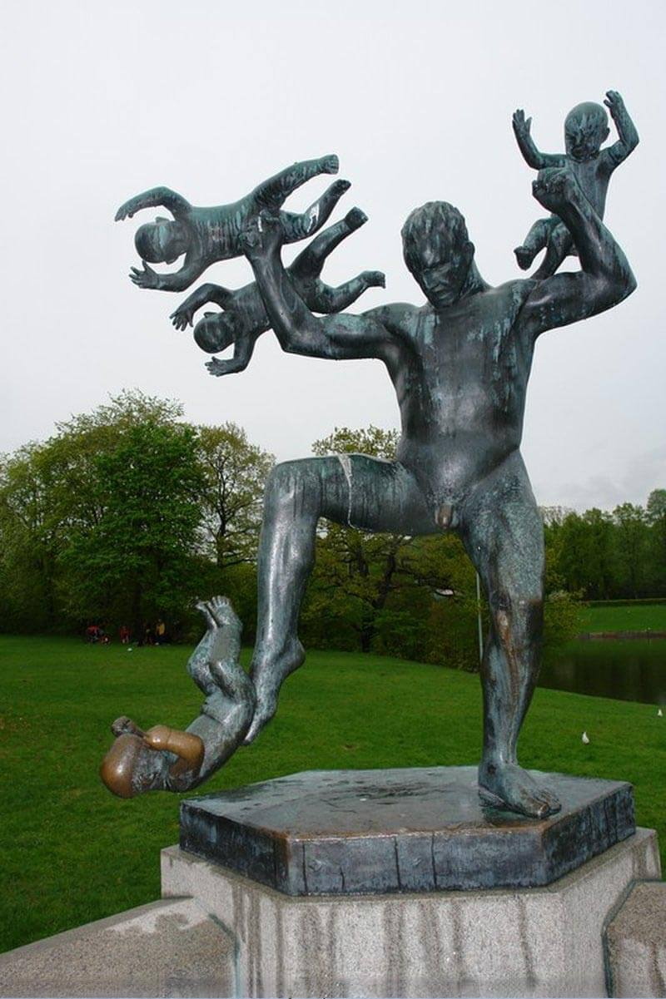
Oдна “халтурка” мастера - модель медали Нобелевской премии мира, которая вручается до сегодняшних дней, и бюст Альфреда Нобеля для Нобелевского института в Осло.
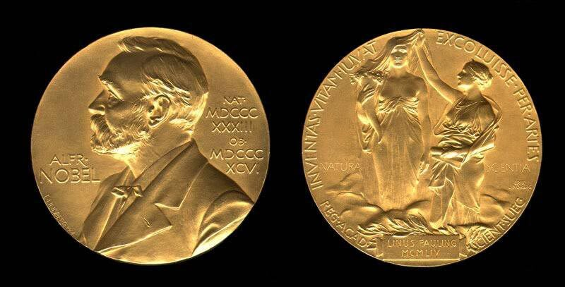
На Сад Вигеланд потратил 35 лет жизни. Скульптурам он не давал никаких названий. Верный своей свободолюбивой традиции, считал что называть - ограничивать зрителя, а он должен сам определять, что для себя видит в работе. Этакий метод свободных ассоциаций.
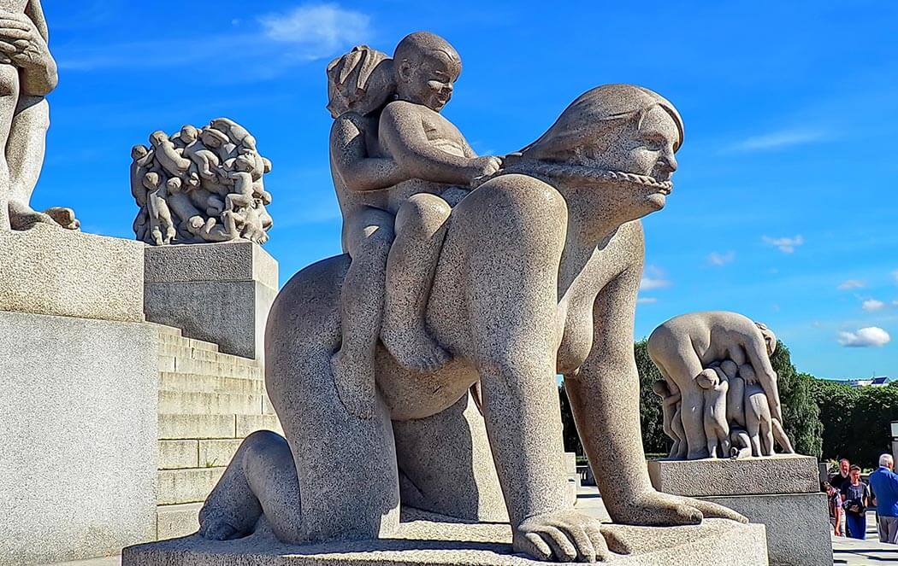
Сад, в первую очередь, про Людей и для Людей. В камне или металле зафиксированы важные моменты жизни человека, эмоции, ценности, переживания. Все, начиная от кованных ворот, Вигеланд продумал сам.
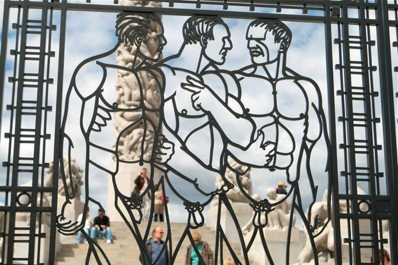
На поляне Сада установлен Монолит. Выполненный из цельного куска мрамора, 17 метров в высоту и весом 180 тонн, напоминает древнеегипетские обелиски.
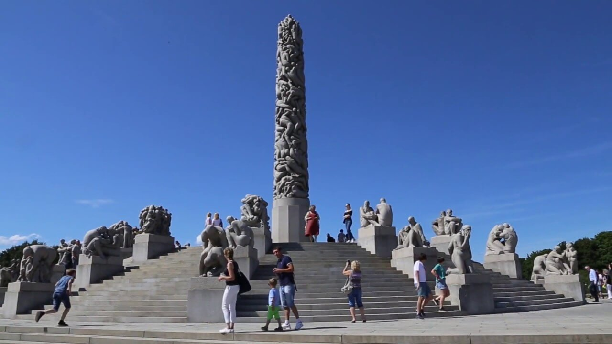
Интересно не то, что его привозили по морю, а то, что когда оставалось уже пару километров по суше, обелиск перемещали со скоростью 1 метр в день! На это ушел год... Потом, под специальным навесом, 3 каменотеса вырезали 121 фигуру по гипсовому образцу... 14 лет! Его тема - стремление к жизни. О нём Вигеланд сказал: “Это моя религия”, и больше никак не комментировал.
Внизу находятся мертвые тела, как часть круговорота, а чем ближе к верхушке, тем более они юны. Продолжение жизни, этим объясняется и более популярная аналогия с членом.
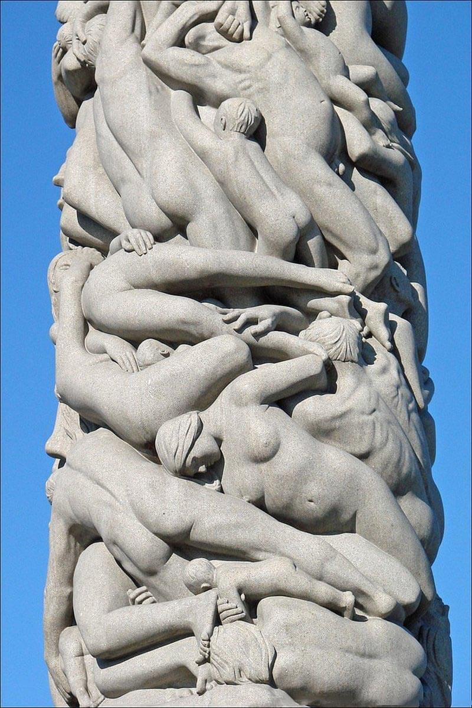
Сначала Вигеланд хотел выставить все скульптуры одновременно, но во время войны понял, что настроения могут измениться, потому времени терять не стоит. На Рождество 1944 состоялось официальное открытие. Зрители могли подняться на навес и рассмотреть даже верхние фигуры.
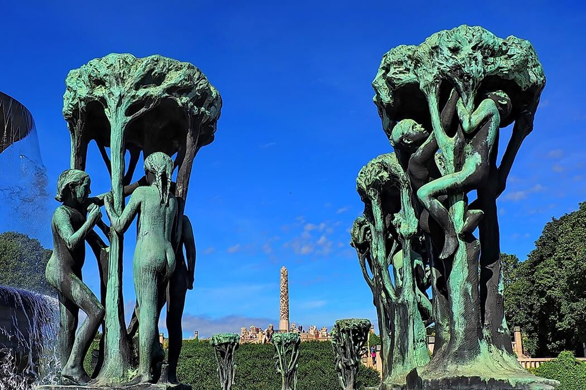
Пришло в общей сложности 180 тысяч, и это при мизерном количестве населения в принципе. И никто на кидал помидорами и не кричал “Фу, порнография”.
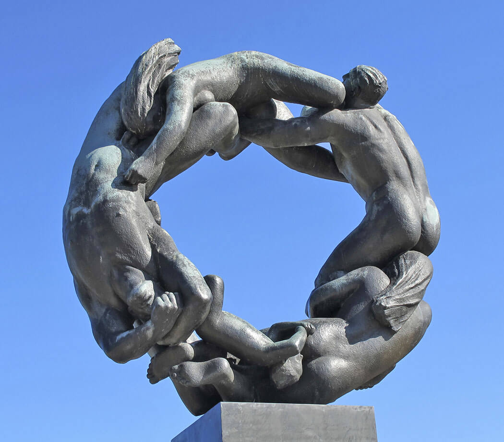
Единственная одетая скульптура в парке — это установленная у центрального входа статуя Густава Вигеланда, автопортрет, выполненный скульптором в последний год жизни.
Вигеланд не изображал идеальные пропорции тела, он считал, что в современном искусстве уже нет необходимости воспевать божественные идеалы, ведь сам современный человек отказался от бога и считает себя равным ему.
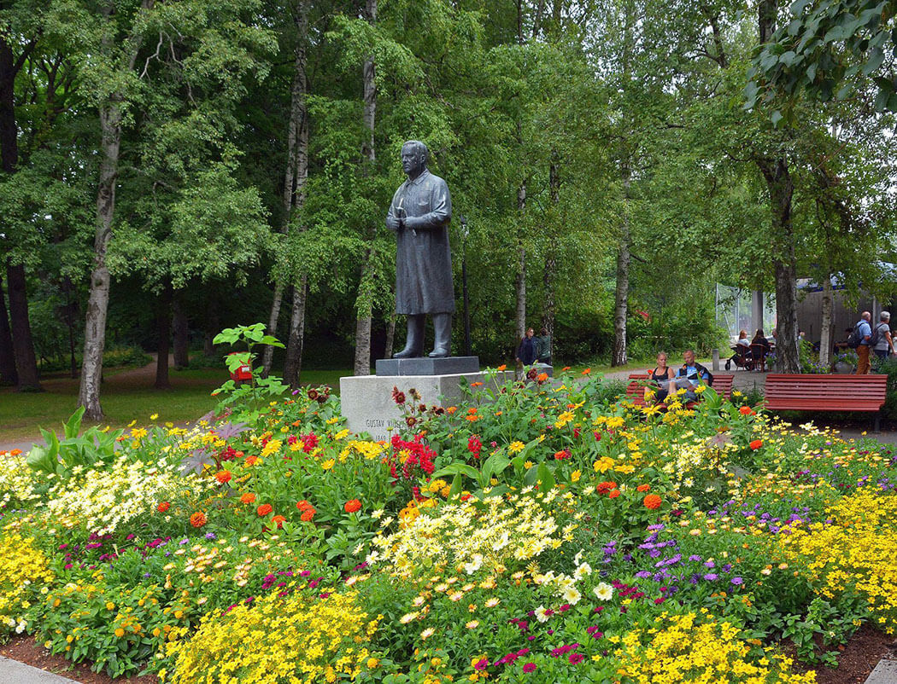
ВВЕРХ